SmartSolve Designer
Describe your system.
Get a solver.
SmartSolve Designer generates a high-performance linear solver specialized to the problem at hand. It asks a short sequence of questions about your matrix, your right-hand sides, the baseline to beat and what would count as an improvement. Your answers are frozen into a run specification — and from there two agents, a Proposer and a Reviewer, collaborate until a candidate implementation beats a verified baseline. Any application in which Ax = b is a computational bottleneck is a potential target.
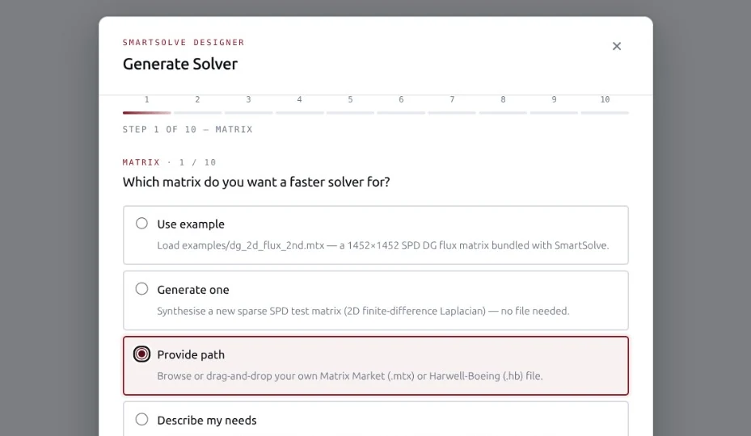
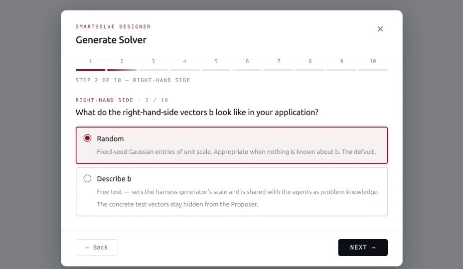
b look like in your application? The test vectors stay held out." data-dur="3800">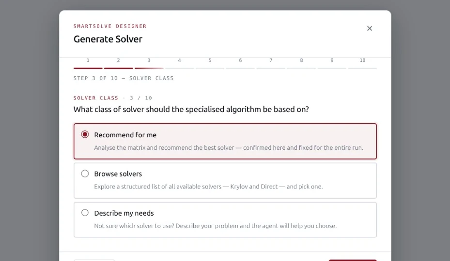
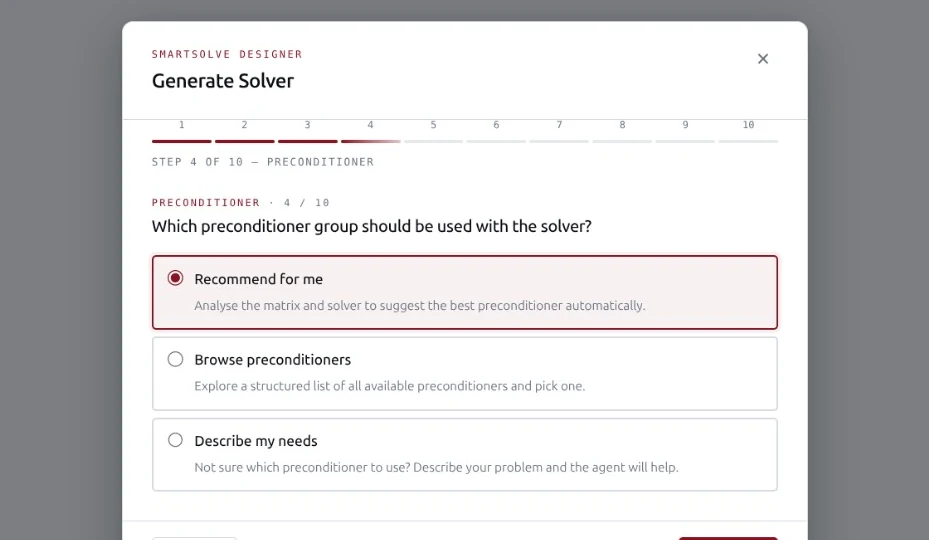
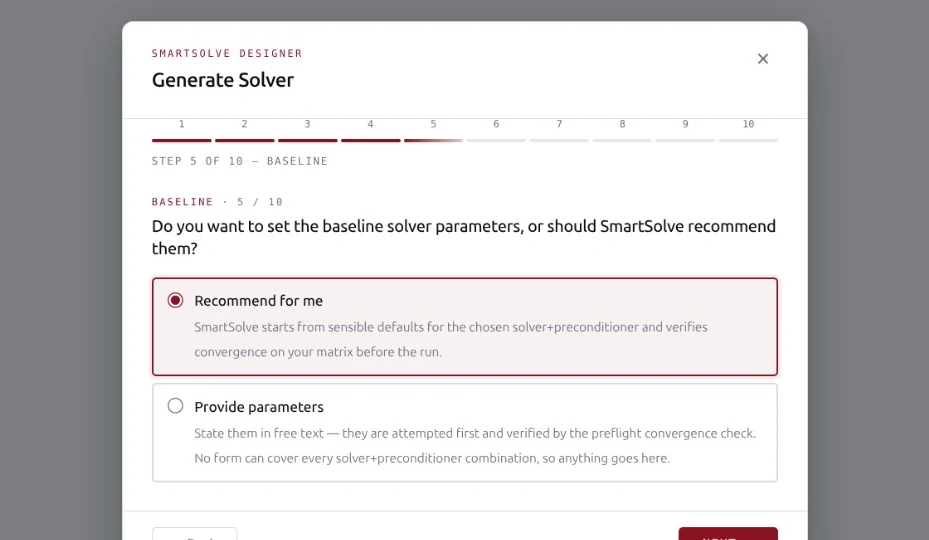
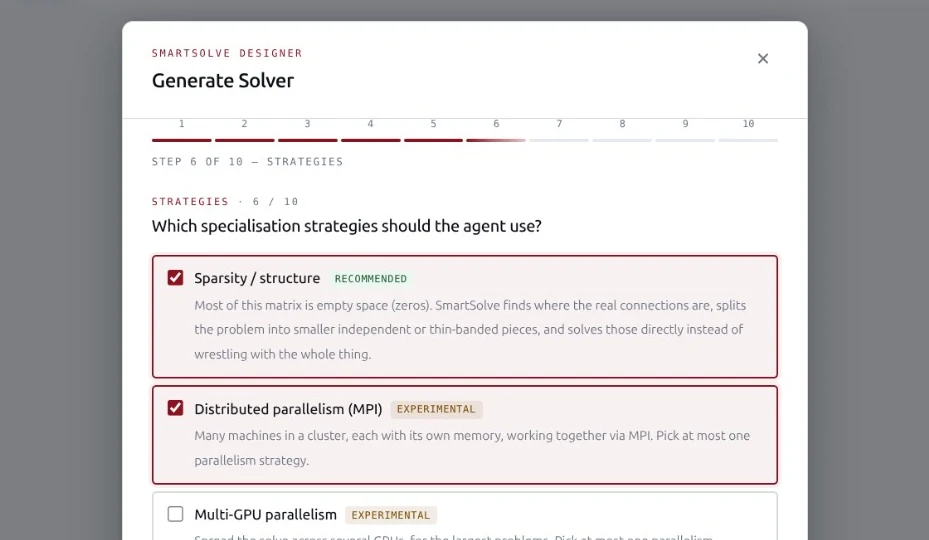
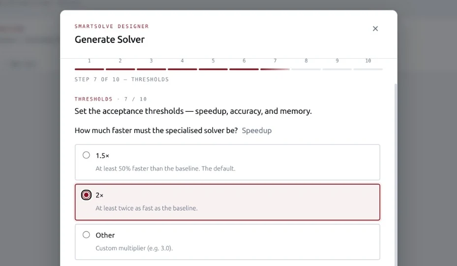
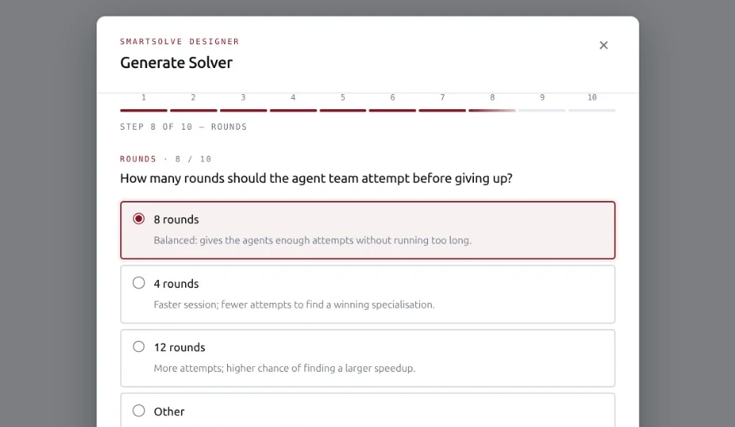
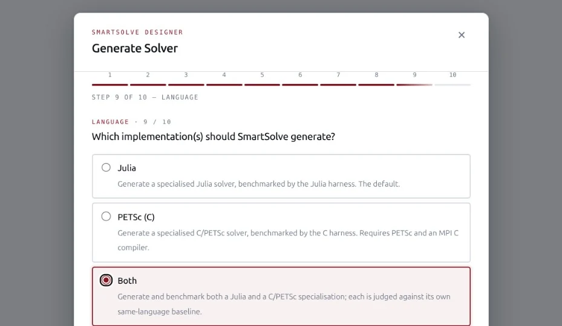
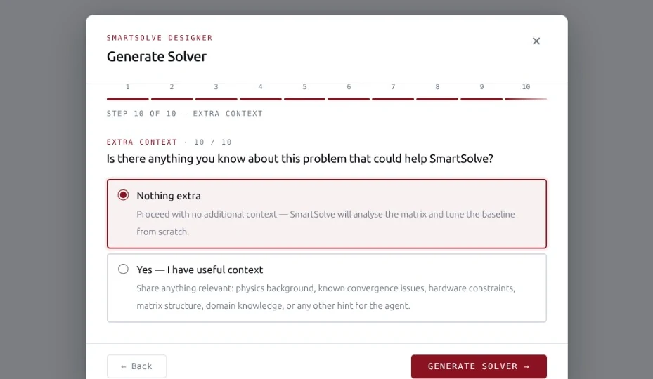
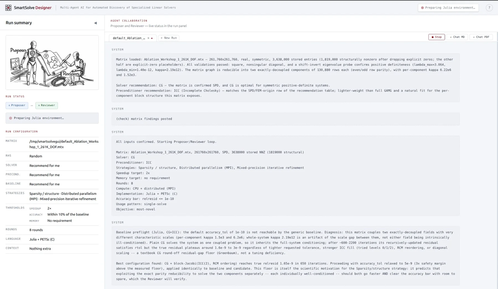
Proposer and Reviewer iterate." data-dur="7000">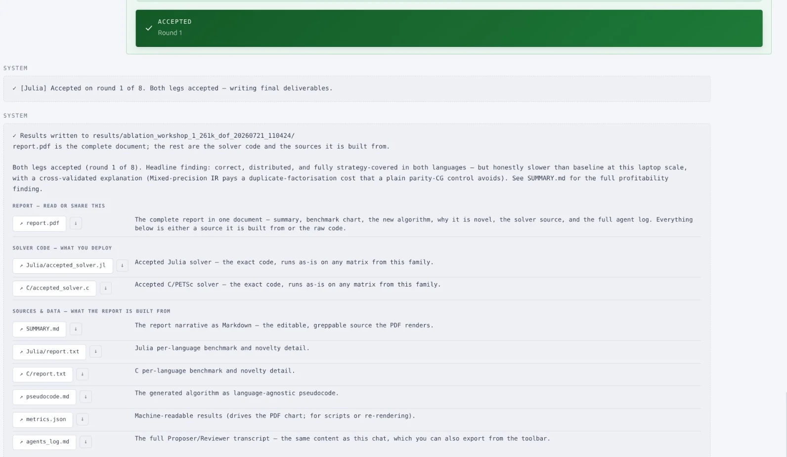
Step 01 of 10 · Matrix
Which matrix do you want a faster solver for? Use the bundled example, generate one, or point to your own Matrix Market file.
Full size ↗
- After the form
Requirements: SmartSolve Designer runs inside Claude Code and needs Julia 1.10 or newer; PETSc and an MPI C compiler are optional, and only required for the C backend.